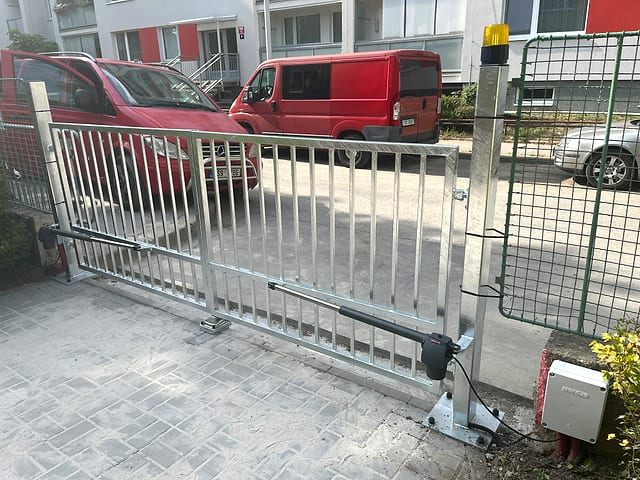

Ruční otevírání zdržuje
Navrhneme pohon podle typu brány, hmotnosti a četnosti používání.
Motor, ovládání a zprovoznění
Chcete doplnit motor na stávající bránu nebo řešíte nový vjezd? Posoudíme stav brány, navrhneme vhodný pohon, zajistíme montáž, ovládání a zprovoznění.
Přímá odpověď
Vrata Šnábl montuje pohony posuvných a křídlových bran v Praze a Středočeském kraji. Řeší výběr motoru, bezpečnostní prvky, ovládání, nastavení a zprovoznění podle typu brány a četnosti používání.
Zavolejte nebo pošlete krátkou poptávku s lokalitou, typem zařízení a fotkou, pokud ji máte. První doporučení pak bude rychlejší a přesnější. Pomůžeme i se zařízením, které jsme původně nemontovali; nejdřív ověříme stav a řekneme, jestli dává smysl oprava, seřízení nebo výměna části.
Pohon musí odpovídat typu brány, hmotnosti, četnosti používání a bezpečnostním prvkům. Proto před montáží řešíme i mechanický stav brány a prostor kolem vjezdu.
Po montáži nastavíme chod, ovládání a základní provoz tak, aby systém fungoval spolehlivě v každodenním používání.
Nejčastější situace
Nový pohon brány doporučujeme tehdy, když má stávající řešení časté poruchy, chybí pohodlné ovládání nebo brána potřebuje bezpečnější provoz.
Navrhneme pohon podle typu brány, hmotnosti a četnosti používání.
Posoudíme, zda stačí oprava, nebo je lepší nový motor s ovládáním.
Doplníme fotobuňky, dorazy a bezpečné nastavení chodu.
Zajistíme ovladače, přijímač a zprovoznění podle potřeb zákazníka.
Ukázky práce
Fotky slouží jako důkaz skutečné práce v terénu. Podle konkrétního zařízení vždy doporučíme servis, úpravu, modernizaci nebo nové řešení na míru.


Související služby
Ozvěte se, když potřebujete servis, seřízení, opravu pohonu, montáž, modernizaci nebo nové řešení na míru. Podle stavu zařízení doporučíme technicky rozumný další krok.
Nejvíc pomůže lokalita, typ zařízení, krátký popis situace a fotka celku i detailu pohonu, ovládání nebo poškozené části.
Zavolejte a domluvíme posouzení stávající brány nebo návrh nového řešení.
Rychlá poptávka